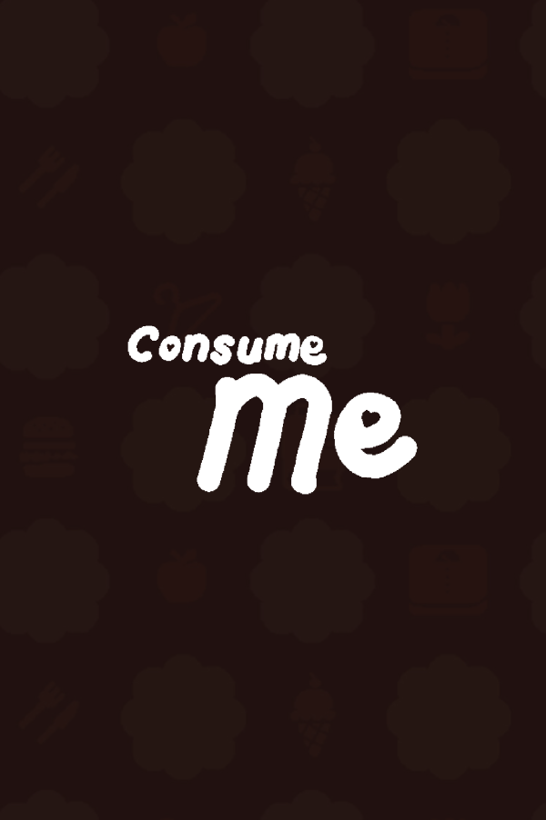

Consume Me
Every archived year-end list appearance, including placement and points earned.
About the Game
BEING A TEENAGER SUCKS. So we made a videogame about it.Hey remember when your parents, your friends, and society at large all conspired to make you feel ugly, lazy, stupid, and unloved despite the brilliant human spirit contained within you? No? Well, allow us to refresh your memory via the timeless medium of a slice-of-life role-playing game!In Consume Me, you take on the role of Jenny, young, in love, and entering her final year of high school. Make meticulous scheduling decisions to maximize your glow-up! Solve the puzzle game of dieting! Evade distractions as you pursue scholarly success! Do chores to get money from mom at a rate much lower than minimum wage! Can you win the heart of the boy of your dreams? Can you hold on to it? Can you chart a course towards a sustainable future? Can you fit just one more TODO goal on your plate, or is it already full to bursting? Most importantly, does any of this matter--either in the game, or in a broader sense? I don't have time to spoil the story here, so I'll just give you a free tip: if you have the spare money, buy some coffee at the corner store and drink it for an extra free-time unit.Features: A darkly funny coming-of-age story: You'll laugh, you'll cry, you'll get a little hungry, sometimes all at the same time! Sorry about that! Every meal a puzzle: Eat your lunch, but be careful not too eat too much. Also, try not to eat too little either. Throw any food you don't want to the dog. It's fine, she's not on a diet! Gripping strategic decision making: A limited amount of time and an unlimited number of things to do!? This classic combination introduces the ultimate strategic question: How should you be spending your time? It's up to you to answer this question...every day of your life!Obtain powerful equipment: Choose from a selection of garments that help you dress for success. But be warned, the armor of this world degrades after a mere single day of use...until you renew it via that ancient ritual known only as "laundry."Over 13 possible endings: Most of them bad!
| Released | 2025-09-24 |
|---|---|
| Developer | AP Thomson, Jie En Lee, Jenny Jiao Hsia, Violet W-P, Ken "coda" Snyder |
| Publisher | Hexecutable |
| Genres | RPG, Strategy, Indie |
| Platforms | macOS, PC |
SingleplayerSteam AchievementsFull controller supportSteam CloudRPGStory Rich2DFunnyFemale ProtagonistComedyControllerCute
Where to Buy
Game information provided by RAWG.
Points by Year
List History
| Year | Source | List | Placement | Points |
|---|---|---|---|---|
| 2025 | Ars Technica | Ars Technica’s Top 20 video games of 2025 | Unranked | 3 |
| 2025 | NPR | The best games of 2025, picked by NPR's staff | Unranked | 1 |
| 2025 | Polygon | The 50 best games of 2025, as chosen by Polygon | 40 | 1 |
| 2025 | SUPERJUMP | 50 Outstanding Games Released in 2025 | Unranked | 1 |